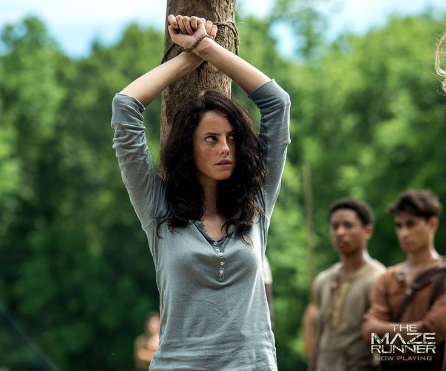

TERESA

TERESA
Teresa Agnes (cuyo verdadero nombre era Deedee) fue una habitante del Laberinto, reclutada por CRUEL a la edad de cinco años y creadora del Laberinto junto con Thomas. Se dice que su nombre se debe a la Madre Teresa de Calcuta.
Rol: Sujeto de prueba / Vínculo con WICKED
-
Interpretado por: Kaya Scodelario
Primera aparición: Maze Runner: Correr o Morir (2014)
"Eres humano, deberías estar asustado."